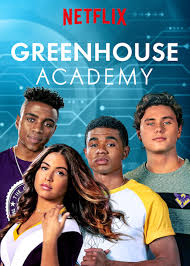

Looking for the best shows ? Look no further, because Astez charts
has put together a list of the 7 best tv shows available to watch
right now, ranked according to the man,the myth, the legend. To keep the list fresh with the best
tv shows to watch, the series featured here are currently in production, have been
renewed for further seasons, or aired their final episode recently (within the last year
or two, so people can still discover them after they’ve ended).
Best TV Shows to Watch
1. The Vampire Diaries
(2009-2017)
The Vampire Diaries is an American supernatural teen drama television series developed by Kevin Williamson
and Julie Plec, based on the book
series of the same name written by L. J. Smith. The series premiered on
The CW on September 10, 2009, and concluded on March 10, 2017, having aired 171 episodes over eight seasons.
The pilot episode attracted the largest audience for The CW of any series premiere since the network launched in 2006;[1] the first
season averaged 3.60 million viewers.[2] It became the most-watched series on the network before being surpassed by Arrow. The show
has received numerous award nominations, winning four People's Choice Awards and many Teen Choice Awards.
CAST: Nina Dobrev,Paul Wesley,Ian Somerhalder,Steven R. McQueen,Sara Canning,Kat Graham,Candice King,Kayla Ewell,etc.

2. Money Heist
(2017-2021)
Money Heist (Spanish: La casa de papel, [la ˈkasa ðe paˈpel], lit. 'The House of Paper') is a Spanish heist crime
drama television series created by Álex Pina. The series traces two long-prepared heists led by the Professor (Álvaro Morte),
one on the Royal Mint of Spain, and one on the Bank of Spain, told from the perspective of one of the robbers,
Tokyo (Úrsula Corberó). The story is told in a real-time-like fashion and relies on an unreliable narrator, flashbacks, time-jumps,
and hidden character motivations for complexity.
CAST: Úrsula Corberó,Alvaro Morte,Itziar Ituño,Pedro Alonso,Paco Tous,Alba Flores,Miguel Herrán,Jaime Lorente,Esther Acebo,Enrique Arce,María Pedraza
3. Outer Banks
(2020-)
Outer Banks is an American action-adventure mystery teen drama television series created by Josh Pate, Jonas Pate,
and Shannon Burke that premiered on Netflix on April 15, 2020.[4][5] The series is set in a community in the Outer
Banks of North Carolina and follows the conflict between two groups of teenagers in search of a lost treasure.
In June 2021, the series was renewed for a third season which premiered on February 23, 2023.[6][7] In February 2023, ahead
of the third season premiere, the series was renewed for a fourth season.[8] The fourth season is set to premiere in two
parts; the first is slate to premiere on October 10, 2024, followed by the second on November 7, 2024.[9]
CAST:Chase Stokes,Madelyn Cline,Madison Bailey,Jonathan Daviss,Rudy Pankow,Austin North,Charles Esten,Drew Starkey,Carlacia Gran
4. The Summer I Turned Pretty
(2022-)
The Summer I Turned Pretty is an American coming-of-age romantic drama television series created by author
Jenny Han for Amazon Prime Video, and it is based on her novel trilogy of the same name. Lola Tung (Belly) stars as
a teenager involved in a love triangle with two brothers played by Christopher Briney (Conrad) and Gavin Casalegno (Jeremiah).
Production on the series began in 2021. It premiered on June 17, 2022, with the first season consisting of seven
episodes.[1] Ahead of the series premiere, it was renewed for a second season which premiered on July 14, 2023, and consists of
eight episodes.[2][3][4] In August 2023, the series was renewed for a third season consisting of eleven episodes which is
scheduled to be released in 2025.
CAST:Lola Tung,Jackie Chung,Rachel Blanchard,Christopher Briney,Gavin Casalegno,Sean Kaufman,Alfredo Narciso,Minnie Mills,Colin Ferguson,Tom Everett Scott,Rain Spencer,Elsie Fisher,Kyra Sedgwick

5. Greenhouse Academy
(20117-2020)
Greenhouse Academy is a teen drama television series released by Netflix.[1]
Based on the Israeli television series The Greenhouse (Ha-Hamama), created by
Giora Chamizer, the series was adapted for international audiences by Chamizer
and Paula Yoo.[2] The first season of the series was released on Netflix on September 8, 2017.
[3] The second season was released on Netflix on February 14, 2018, the third season was
released on October 25, 2019,[4] and the fourth season was released on March 20, 2020.[5] In
July 2020, it was announced that Greenhouse Academy had been canceled after four seasons.[6]
CAST:Ariel Mortman,Finn Roberts,Chris O'Neal,Dallas Hart,Cinthya Carmona,Grace Van Dien,Benjamin Papac,Jessica Amlee,BJ Mitchell,Parker Stevenson,Danika Yarosh,Dana Melanie

6. Wednesday
(2022-)
Wednesday is an American coming-of-age supernatural mystery television series based on
the character Wednesday Addams by Charles Addams. Created by Alfred Gough and Miles Millar,
it stars Jenna Ortega as the titular character, with Gwendoline Christie, Riki Lindhome, Jamie McShane,
Hunter Doohan, Percy Hynes White, Emma Myers, Joy Sunday, Georgie Farmer, Naomi J. Ogawa, Christina Ricci,
and Moosa Mostafa appearing in supporting roles. Four out of the eight episodes of the first season
were directed by Tim Burton, who also serves as executive producer. It revolves around Wednesday Addams,
who attempts to solve a murder mystery at her new school.[2]
CAST:Jenna Ortega,Gwendoline Christie,Riki Lindhome,Jamie McShane,Hunter Doohan,Percy Hynes White,Emma Myers,Joy Sunday,Georgie Farmer,Naomi J. Ogawa,Christina Ricci,Moosa Mostafa
7. Never Have I Ever
(2020-2024)
Never Have I Ever is an American comedy-drama television series starring Maitreyi Ramakrishnan,
created by Mindy Kaling and Lang Fisher. Though it takes place in the San Fernando Valley, the
show has been reported to be loosely based on Kaling's childhood experiences in the Boston area,[1]
while Kaling herself has said it is based "in the spirit of my childhood".[2] It premiered on Netflix
on April 27, 2020, and is about an Indian-American high school student dealing with the sudden death of
her father and the bumpy journey through her last three years of high school.[3][4][5] The series has
received critical acclaim.[6]
The series has been described as a watershed moment for South Asian representation in Hollywood and
has been praised for breaking Asian stereotypes.[7][8][9] On July 1, 2020, Netflix renewed the series
for a second season,[10] which premiered on July 15, 2021.[11] Netflix renewed the series for a third
season on August 19, 2021,[12] which was released on August 12, 2022, and consists of 10 episodes,
[13][14] and a fourth and final season which released on June 8, 2023.[15]
CAST:Maitreyi Ramakrishnan,Poorna Jagannathan,Richa Moorjani,Jaren Lewison,Darren Barnet,Ramona Young,Lee Rodriguez,John McEnroe
Astez Charts by Kelvin Ofori
(Aspiring Software Engineer)